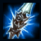

Jarvan IV
| JarvanIV The Exemplar Of Demacia | |
|---|---|
| Release date | 01.03.2011 |
| Class | Diver |
| Positions | Jungle |
| Resource | Mana |
| Range type | Melee |
| Adaptive type | Physical |
| Base statistics | |||
| Health | 570 – 2100 | Mana | 300-980 |
| Health regen. | 8 – 10.15 |
Mana regen. | 7.5-16.85 |
| Armor | 38 – 70 | Attack damage | 52 – 99.6 |
| Magic resist. | 30 – 38.5 | Crit. damage | 175% |
| Move. speed | 340 | Attack range | 175 |
Prințul Jarvan din dinastia Lightshield este moștenitorul tronului Demaciei. Crescut pentru a deveni un model de virtute demaciană, acum este nevoit să caute echilibrul dintre marile așteptări pe care ceilalți le au de la el și propria sa dorință de a lupta în prima linie. Jarvan își inspiră soldații prin curajul și hotărârea lui, ridicând mândru stindardul familiei sale și dovedind că are forța necesară pentru a deveni, într-o zi, un lider desăvârșit al poporului său. |  |
CADENȚĂ MARȚIALĂ Primul atac de bază al lui Jarvan împotriva unui inamic provoacă daune fizice bonus în funcție de viața curentă a țintei. Acest efect nu se poate produce din nou împotriva aceleiași ținte în decurs de câteva secunde. |
||
|---|---|---|---|---|
LOVITURA DRAGONULUI Jarvan IV își întinde lancea, provocând daune fizice și reducând armura tuturor inamicilor aflați pe traiectoria armei. În plus, lancea îl aduce pe Jarvan lângă stindardul său demacian, aruncând în sus toți inamicii din calea sa. |
||||
SCUTUL DE AUR Jarvan IV îi invocă pe regii străbuni ai Demaciei ca să-l apere de rău și încetinește inamicii din jur. |
||||
| STINDARD DEMACIAN Jarvan IV poartă mândria Demaciei, care îi acordă în mod pasiv viteză de atac bonus. Activarea ''Stindardului demacian'' îi permite lui Jarvan IV să ridice un drapel demacian care provoacă daune magice la impact și oferă viteză de atac campionilor aliați din apropiere. |
||||
CATACLISM Jarvan IV se aruncă eroic în luptă. Năvălește spre țintă cu atâta forță încât remodelează peisajul, creând o arenă în jurul lui și al inamicului. În momentul impactului, inamicii din apropiere suferă daune. |